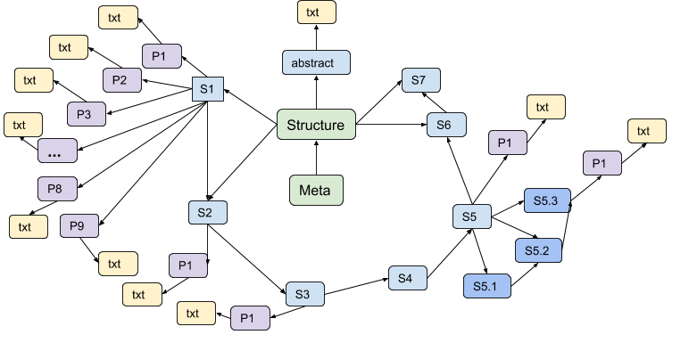

Linkflows
Enabling a web of linked semantic publishing workflows
Linkflows
Enabling a web of linked semantic publishing workflows
Cristina-Iulia Bucur
7 June 2018 @ ESWC'18, PhD Symposium
These slides: https://goo.gl/LjPdU8
About Linkflows
- PhD project started in February 2017
- Supervisors: Tobias Kuhn, Davide Ceolin, Lora Aroyo
- Affiliation: Vrije Universiteit Amsterdam
- Collaborations:
Scientific publishing
- Effective means to share information and knowledge
- Verification of the validity of one's claims
- Shift towards the digital environment
- Understandable content for both humans and machines
BUT...
Scientific publishing: still in the Middle Ages?
- Initial paradigm of publishing: the same!
- Article PDFs: coarse-grained structures in which scientific contributions are communicated
- Measure of quality: reviewing
How to keep up?
- It takes time to publish! even ~ 1 year
- It takes time to stay up to date!
- ~22 hours/week for epidemiologists (2004)
- 2000 papers/day in PubMed (2018)
"Knowledge Burying"
| B. Mons. Which gene did you mean?. In: BMC Bioinformatics (2005). doi: 10.1186/1471-2105-6-142 |
Computer-readable information for computer aided analysis More than 40% of information lost from publishing to mining RIP (Rest in Paper) knowledge |
Research Question
How can scientific workflows that produce and consume digital artifacts be assessed, linked and decentrally executed across platforms, such that individual steps of a single workflow can be distributed?What if...?
- Represent scientific knowledge as nodes in a network
- New way of publishing at a very fine-grained level:
- ontologies on digital publishing - SPAR
- new forms of granular provenance modeling - nanopublications


Publishing at the atomic level: Nanopublications
"the smallest unit of publishable information"
|
Minimal units of thought Context metadata: authors, institutions, etc. Nanopublication metadata |


Linkflows: Use cases
- IOS Press: publishing house based in Amsterdam
- Netherlands Institute for Sound and Vision, the Netherlands cultural archive, has over 70% of the Dutch audio-visual heritage
- VIEW Journal of European Television History and Culture
- Tijdschrift voor Mediageschiedenis (Magazine for Media History)
Approach
- Develop a simple model for linkflows
- Use Linked Data principles and tools to publish and link scientific workflows:
Evaluation design
- Qualitative and quantitative analysis on a corpus of selected articles
- Choose ~20 sample articles from IOS Press and Netherlands Institute for Sound and Vision
- Consider reviews, comments and annotations
Results: Incomplete view of network
Linkflows model for sample paper
| Version 1 | Version 2 | Camera-ready | Total | ||||||
|---|---|---|---|---|---|---|---|---|---|
| #nodes | 109 | 174 | 175 | 284 | |||||
| #links | 221 | 219 | 245 | 685 | |||||
| #inter-node links | 150 | 233 | 235 | 618 | |||||
| #external links | 30 | 47 | 47 | 69 | |||||
| #reviewing links | 57 | 20 | 3 | 80 | |||||
Decentralize: publication and peer-reviewing
- Approach: use Linked Data Notifications (LDNs) for decentralized execution of workflows
- Evaluation: controlled user experiment on the software prototype created
Reviewing workflow using LDNs

|
|
Quality assessment: publication and reviews
- Approach: develop metrics for quality assessment of the digital artifact
- Evaluation:
- Nichesourcingto evaluate the quality and impact metrics
- Import workflows and use then as a ground truth for workflow generation
Support inquires: similar prior work and collaboration
- Approach:
- Support complex searches of a digital artifact
- Generate linked workflow steps, opening the execution of workflow for users